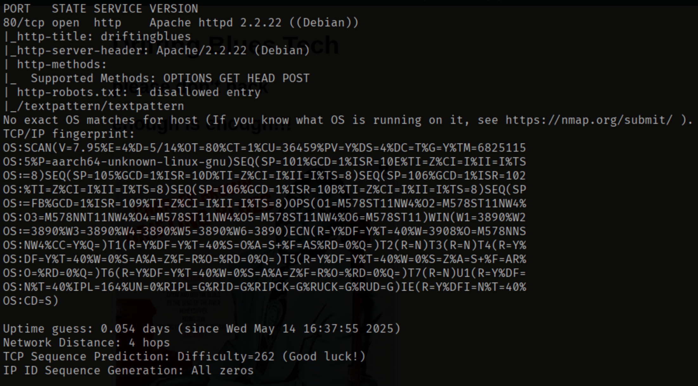
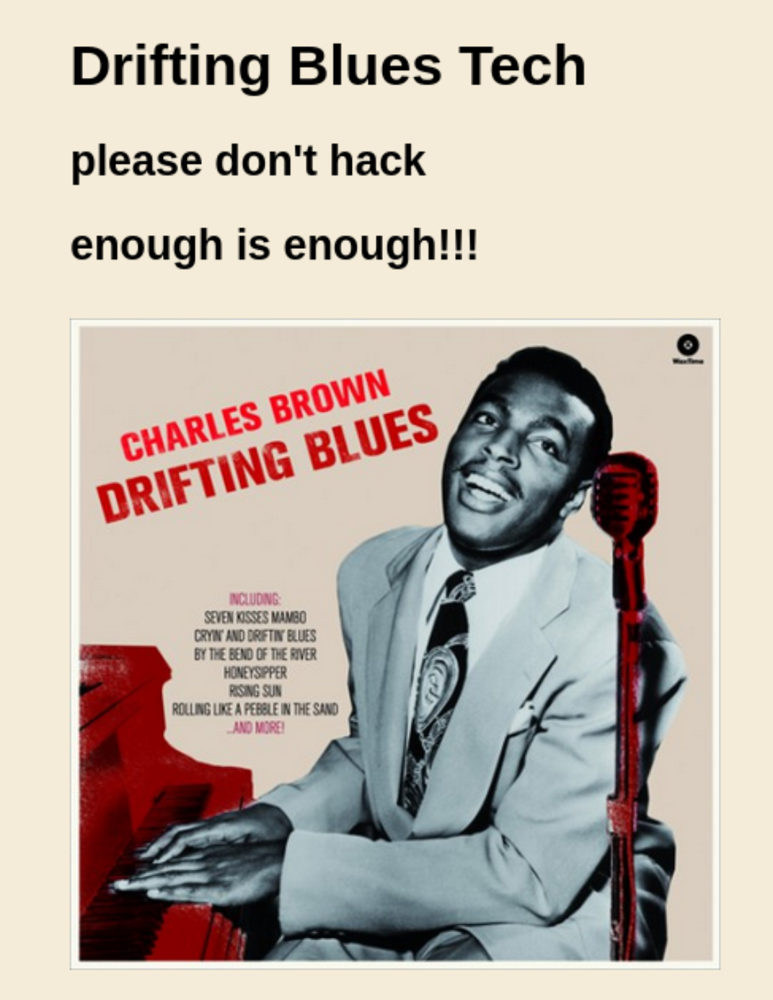
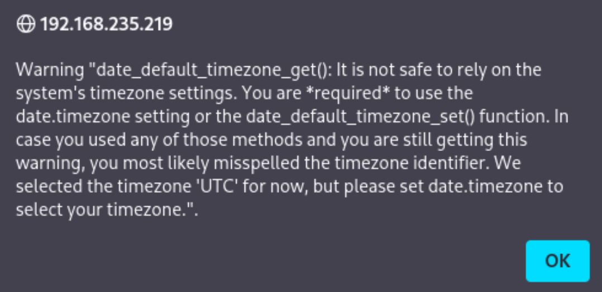

Deploy enumeration and web enumeration methods to identify vulnerabilities. Engage in password cracking techniques to gain unauthorized access. Capitalize on privilege escalation strategies to further elevate access. This lab is designed to apply your skills in system exploitation.
Running a nmap scan on the giving ip:
We can see on port 80 running an http web server using Apache 2.2.22.
Pasting the IP into the browser leads us to simple website with few lines of text, and an image.
Checking the HTML source code showed a website at https://vvmlist.github.io/, but not relevant.
Checking the webcrawler perms, robots.txt, gives us a some new information.
Checking /textpattern/textpattern out we see a login in page but don't have creds yet.
Running a Dirb scan we find /spammer which downloads a .zip file. Trying to extract the file gets us block by a
password.
Let's try some password cracking!
Since it's a zip file, we can use zip2john and then john the file we named to receive the cracked .zip, in my case, bob.txt.

We can now extract the .zip file using the password we got from john and get a set of creds. Time to find where to use them.
From robots.txt, there was a /textpattern/textpattern, which brings us to a login page. Using the creds we got from creds.txt gets us a pop-up.
Checking the box to not show up again removes it so we should be good.
We are landed into an admin panel and are now looking to find where we can break some stuff!!
Content has a files tab, and we are allowed to upload things, which seems to be a good way of us getting in.
We can upload a PHP file holding code for a reverse shell to get us in from
github
Then navigating to /textpattern/files lets us click the file to activate and get the code running.
We are now in.
First we do some shell stabilization
python -c ‘import pty;pty.spawn(“/bin/bash”)’
Ctrl + z
stty raw -echo;fg
export TERM=xterm
Since we didn't get in through a password we can skip checking for sudo (sudo isn't even installed).
Let's check for SUID; find /find / -perm /4000 2>/dev/null.
Checking GTFObins, we don't see any we can abuse to get root access.
Let's check the kernel version to see it that's vulnerabilities: uname -a.
Linux driftingblues 3.2.0-4-amd64 #1 SMP Debian 3.2.78-1 x86_64 GNU/Linux.
A quick google for vulnerabilities in this version we found “Dirty Cow” on
Exploit DB
Using a local python server we can wget the file over and use the gcc complier to execute the file. It asks us to
choice a password and finishes executing.
I renetcated into the server, stabilize the shell and then run su firefart with the password I choose, which gets
into root.


Cat the root file and boom done.